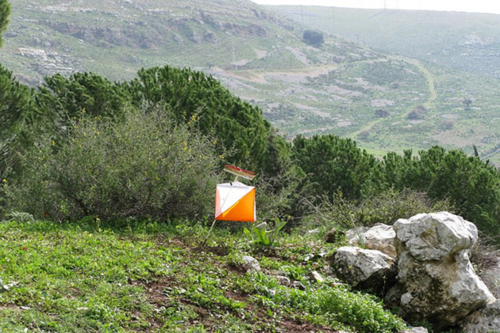
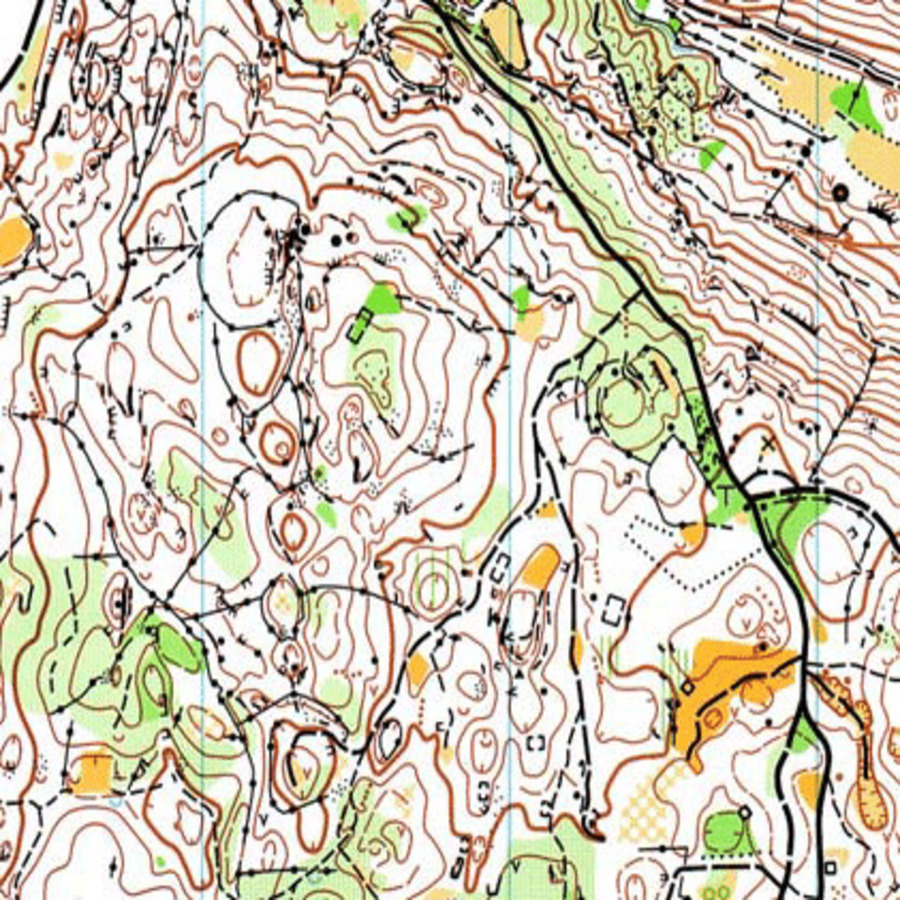
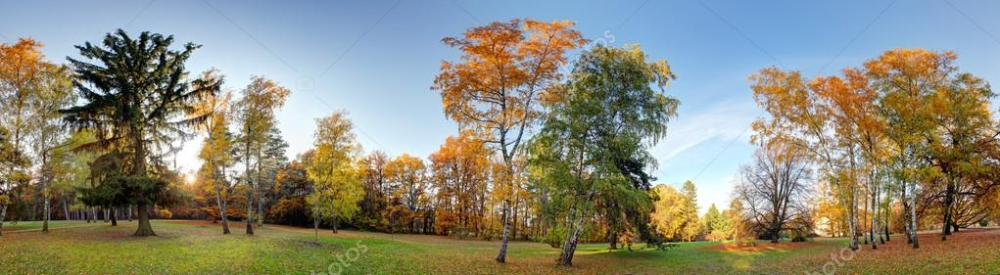

Nagyon sok célom van a tájfutásban versenyzés terén. Évekig próbáltam kijutni az ifjúsgi európa bajnokságra, de sajnos ezt az álmomat nem sikerült megvalósítanom. A következő két évben a junior világbajnokságra kvalifikálhattam volna magam, de sajnos ott sem jártam sikerrel. 2021-en tavaszán lesz még egy junior világbajnokság, ahol még utoljára rajthoz állhatnék, jelenleg erre a versenyre való kijutás a cél.
A terveim viszont a munkavégzéshez is kapcsolódnak. Szeretnék a jövőben is aktív segítő tagja lenni az egyesületnek. Még jobban belevonni magam az egyesület ügyeibe, hogy a most felnövő utánpótlás egy még sikeresebb egyesületben érhessen el kiemelkedő eredményeket. Továbbá remélem, hogy a sporton keresztül szerzett tapasztalataim által a jövőben könnyebb dolgom lesz majd az elhelyezkedés terén.
